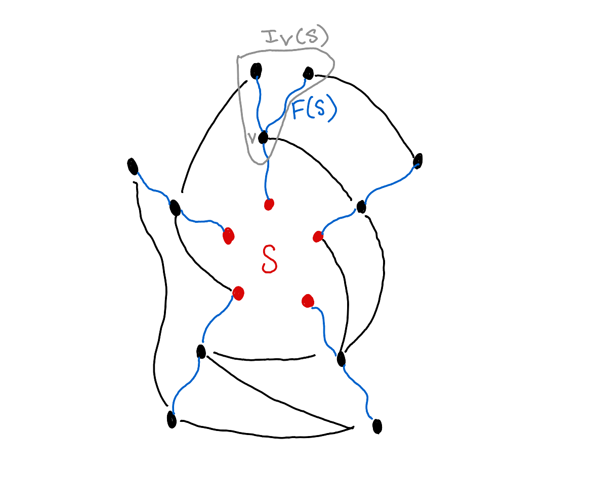

Home
What's This All About?
For many graph algorithms, it is convenient to decompose the graph into different regions which are only sparsely connected to each other, and thus distances are approximately
preserved if you delete all but a few edges connecting the regions. One such algorithm is the StarDecomposition, which divides a graph \(G = (V,E)\) into a partition \(V_0 \ldots V_k\)
and deletes all edges between different \(V_i\)'s, except for one canonical edge from \(V_0\) to each \(V_i\). When this is done well, there is a path from \(v_i\) in some \(V_i\) to \(v_j\) in some \(V_j\) which
goes through \(V_0\), and its length is not much greater than the original shortest path from \(v_i\) to \(v_j\).
Notation
Given a weighted graph, we define
- \(d(e) = w(e)^{-1}\) for any edge.
- \(B(x,r)\) the set of vertices distance \(r\) or less than \(x\).
- For a set \(F \subseteq E\), \(\text{cost}(F) = \sum_{e \in F} w(f)\).
- For a set \(U \subseteq V\) \(\partial U\) are edges from \(U\) to \(V-U\).
- For a partition \(V_0 \ldots V_k\) of the vertex set, \(\partial (V_0 \ldots V_k)\) are those
edges \(e = (a,b) \) for which \(a \in V_i, b \in V_j\) for \(i \neq j\).
- All logs are base \(2\).
Concentric Systems and Ball Growth
Concentric Systems
Imagine you have a vertex \(x_0\) in a graph \(G\). For our purposes, \(G\) will be an undirected graph with weights. We shall adopt as a notion of
distance the reciprocal of the weight: \(d(a,b) = w(a,b)^{-1}\). You might consider the balls rooted at \(x_0\), increasing by their radius.
Formally, I suggest that we let \(B_r\) denote the set of vertices whose distance from \(x_0\) is at most \(r\). For some graphs, these balls are able to have a relatively
small boundary compared to their volumes. For instance, if one were to carry out this procedure on the Bolas graph, starting from a vertex in the clique, we would find that the ball
\(B_0\) has an enormous boundary, since \(x_0\) is connected to a bunch of things. However, \(B_1\) has a boundary with only one edge in it. Other graphs
yield different results; something like an expander graph is totally hopeless (see Tanner's Theorem). We will continue to ask this question for
things more general than simple radius based balls.
Note that the set of balls
\(\mathcal B = \{ B_r : r \in \mathbb R_{\geq 0} \}\) satisfy the following properties:
- \(B_0\) is nonempty.
- \(B_{s} \subseteq B_r\), whenever \( s \leq r\)
- If \(u\) is in \(B_r\) and \(v\) is a neighbor of \(u\) with \(d(u,v) = \delta\), then
\(v \in B_{r + \delta}\).
More generally, we shall say that any system of
vertex subsets \(\mathcal L = \{L_r : r \in \mathbb R_{\geq 0} \}\) is a concentric system if it satisfies the above properties.
How Much Edge?
If we fix a concentric system \(\mathcal L\), we can define the "radius" \(\|v\|\) of a vertex is the least \(r\) for which \(v\) is in
\(\mathcal L\). We can then consider the vertices in order of when they appear in a concentric system and relabel them so that
\(r_1 \leq r_2 \ldots \leq r_n\). Moreover, if \(v_i\) appears at time \(r_i\) and \(v_j\) is a neighbor of \(v_i\) with edge length \(\delta\), then
\(v_j\) will appear by time \(r_i + \delta\), and thus \(\delta \geq |r_i - r_j|\). For simplicity, assume that this inequality is an equality, meaning no
edge contains any slack.
A given \(L_{r_i}\) will have a boundary \(\partial L_{r_i}\); each edge in the boundary will be of the form \( (v_j, v_k) \), where \(r_j \leq r_i\) but
\(r_k > v_i\). You might now imagine physically moving along this edge, and you keep track of a "total" distance starting with \( d = r_j \) at \(v_j\)
and linearly increasing to \(r_k\) by the time you reach \(v_k\). At some point in this process your distance travelled will be \(r_i\), having travelled a fraction
\[ \frac{r_i - r_j}{r_k - r_j} = \frac{r_i - r_j}{d(v_j, v_k)} \]
along the edge. So in this sense, \(L_{r_i}\) contains that amount of the edge. More generally, the "total amount of edge" in \(L_{r_i}\) is defined as
\[ \mu_i \triangleq \text{vol}(E(L_{r_i})) + \sum_{\text{e split by } L_{r_i}} \frac{r_i - r_j}{r_k - r_j} \]
Suppose now that we go from \(L_{r_i}\) to \(L_{r_{i+1}}\). How much does the amount of edge increase by? Of course, any edge totally inside
\(L_{r_i}\) remains. All the edges in \(\partial B_i\) will connect to \(v_\ell\)'s where \(r_{\ell} \geq r_{i+1}\); for those, we increase our progress by
\[ \frac{r_{i+1} - r_i}{r_\ell - r_j}. \]
Therefore, if we sum this over all such edges, we obtain the new amount of edge contained in \(L_{r_{i+1}}\):
\[ \mu_{i+1} - \mu_i = \sum_{(v_j, v_\ell) \in L_{r_i}} \frac{r_{i+1} - r_i}{r_{\ell} - r_j} = (r_{i+1} - r_i) \sum_{(v_j, v_\ell) \in \partial L_{r_i}} w(e) \triangleq (r_{i+1} - r_i) \text{cost}(\partial \partial L_{r_i}) \]
We have defined the cost of an edge set to be the sum of the weights within it. To summarize, we have the relationship
\[ \mu_{i+1} = \mu_i + (r_{i+1} - r_i) \text{cost}(\partial \partial L_{r_i}) \]
If we denote by \(\text{vol}(S)\) the set of edges with at least one endpoint in \(S\), then it becomes clear that
\[ \text{vol}(E(L_{r_i})) \leq \mu_i \leq \text{vol}(L_{r_i}). \]
Some Sets Have Small Boundary
Suppose now that we fix two numbers \(\lambda < \lambda'\), and we are interested in all the concentric sets \(L_r\) with
\(r \in [\lambda, \lambda']\). Assume, to keep things nontrivial, that \(\lambda < \max_i r_i\). Provided that this is the case, it should
be possible to pick \(a, b\) so that \(r_{a - 1} \leq \lambda < r_{a}\) and \( r_{b} < \lambda' \leq r_{b + 1}\).
In other words, you could essentially round \(\lambda\) down to \(r_{a}\) without changing \(L_{\lambda}\), and you could likewise round
\(\lambda'\) up to \(r_{b + 1}\). Because \(r_{a - 1} < r_{b+1}\), it must certainly be true that \(b \geq a - 1\). In the edge case of \(b = a - 1\), then this means that
\(L_{\lambda} = L_{\lambda'}\). So if \(r\) is any number between \(\lambda\) and \(\lambda'\), this means that all edges interrupted by \(L_r\) have length
at least \(\lambda - \lambda'\) and thus cost at most reciprocal to it:
\[ \text{cost}(\partial L_r) \leq \frac{1}{\lambda' - \lambda}\text{vol}(\partial L_r) \leq \frac{1}{\lambda' - \lambda}\text{vol}(L_r). \]
Note also that if one has for some large \(\alpha\) that,
\[ r_{i+1} - r_i \geq \alpha \]
then every edge in \(\partial B_i\) has distance at least \(\alpha\), or alternatively cost at most \(\alpha^{-1}\). Meaning
\[ \text{cost}(\partial L_{r_i}) \leq \alpha^{-1} \text{vol}(L_r) \]
Of course, the larger the \(\alpha\), the stronger the statement. In lieu of this, consider some positive \(\eta\) to be chosen later. If there is an \(i \in [a-1,b]\) for which
\[ (r_{i+1} - r_i) \geq \frac{\lambda' - \lambda}{\eta}, \]
then
\[ \text{cost}(\partial L_{r_i}) \leq \frac{\eta}{\lambda' - \lambda} \text{vol}(L_{r_i}). \]
Because we only require that \(\lambda \geq r_{a-1}\), it could feasibly be the case that \( i \geq a-1\) but \(r < \lambda\).
But \(r_{a-1} \leq \lambda < r_a\), so \(L_{\lambda} = L_{r_i}\), and the above inequality continues to hold with \(\lambda\) in the place
of \(r_i\).
The final case is that for all \(i \in [a-1,b]\)
\[ r_{i+1} - r_i < \frac{\lambda' - \lambda}{\eta}. \]
Letting,
\[ \gamma = \min_{i \in [a-1,b]} \frac{\text{cost}(\partial L_{r_i})}{\mu_i}, \]
One has
\[ \begin{aligned} \mu_{i+1} & = \mu_i + (r_{i+1} - r_i) \text{cost}(\partial L_{r_i})\\
& = \mu_i + (r_{i+1} - r_i) \mu_i \frac{\text{cost}(\partial L_{r_i})}{\mu_i} \\
& \geq \mu_i (1 + (r_{i+1} - r_i) \gamma )
\end{aligned} \]
Assume in advance that \((r_{i+1} - r_i) \gamma \leq 1\) so that the bound
\(1 + x \geq 2^x\) applies. Given that this is the case,
\[
\begin{aligned}
\mu_{b+1} & = \mu_{a - 1} \prod_{i=a-1}^b \frac{\mu_{i+1}}{\mu_i} \\
& = \mu_{a-1} \prod_{i=1}^b \frac{1}{\mu_i} \bigg(\mu_i + (r_{i+1} - r_i)\text{cost}(\partial B_\lambda) \bigg) \\
& \geq \mu_{a-1} \prod_{i=1}^b \bigg(1 + (r_{i+1} - r_i) \gamma \bigg) \\
& \geq \mu_{a-1} \prod_{i=1}^b 2^{(r_{i+1} - r_i)\gamma} \\
& = \mu_{a-1} 2^{(r_{b+1} - r_{a-1})\gamma} \\
\end{aligned}
\]
Thus,
\[ \gamma \leq \frac{1}{r_{b+1}- r_{a-1}} \log\bigg(\frac{\mu_{b+1}}{\mu_{a-1}}\bigg) \]
To upper bound this, note that we can lower bound \(\mu_{a-1}\) by \( \text{vol}(E(L_{a-1})) = \text{vol}(E(L_{\lambda})) \), and we can upper bound \(\mu_{b+1}\) by
trivially by \(m\), the total number of edges. And \(r_{b_1} - r_{a-1} \geq \lambda' - \lambda\). Thus,
\[ \gamma \leq \frac{1}{\lambda ' - \lambda}\log\bigg(\frac{m}{E(L_{\lambda})}\bigg) \]
Furthermore, to get \((r_{i+1} - r_i) \gamma \leq 1\) to hold, it is enough to ensure that \(\frac{\lambda ' - \lambda}{\eta} \gamma \leq 1 \), which works with the choice
\[ \eta = \log\bigg(\frac{m}{\text{vol}(E(L_{\lambda}))}\bigg) \]
By construction, there will be some \(i \in [a-1,b]\) for which the minimum is achieved:
\[ \text{cost}(\partial(B_i)) = \mu_i \gamma \leq \frac{\eta \mu_i}{\lambda' - \lambda} \leq \frac{\text{vol}(L_{r_i})}{\lambda' - \lambda}\log\bigg(\frac{m}{E(L_{r_{a-1}})}\bigg) \]
Of course, if \(i\) happens to be such that \(r_i < \lambda\), we can again take \(\lambda\) without changing any of the sets.
To summarize, we have found that
For any \(\lambda < \lambda'\), there will exist some \(r \in [\lambda, \lambda') \) such that
\[ \text{cost}(\partial L_r) \leq \frac{\text{vol}(L_r)}{\lambda' - \lambda} \max\bigg(1, \log\bigg(\frac{m}{\text{vol}(E(L_{\lambda}))}\bigg) \bigg). \]
Warning While this worked in principle, it's technically possible that \(L_{\lambda}\) in the above construction contains no edges. Of course, the statement is true,
except now there's an infinity, which isn't very helpful for an upper bound. If one
adds \(+1\) to the definition of \(\mu_i\), the same analysis yields a more universal
\[ \star \text{cost}(\partial L_r) \leq \frac{\text{vol}(L_r) + \tau}{\lambda' - \lambda} \max\bigg(1, \log\bigg(\frac{m + \tau}{\tau + \text{vol}(E(L_{\lambda}))}\bigg) \bigg).\]
Remark For simplicity of the proof, it was assumed that edge lengths were "minimal" in the sense that they had no slack. It is trivial to remove this assumption. Note that if \(G'\) is the same as
\(G\) but with shorter edges, then a concentric system of \(G\) is still a concentric system of \(G'\). We can apply the statement to \(G'\) and simply note that costs in \(G\) are lower than in \(G'\), whil the
right hand side does not depend on weights and remains unchanged.
Given that \(\lambda' - \lambda\) is analogous to a length, its reciprocal is analogous to a cost. So an approximation of what we showed was that there's an \(r\) for which
\[ \frac{\text{cost}(\partial L_r)}{\text{vol}(L_r)} \leq \text{Cost of } [\lambda, \lambda'] \]
Application: A Ball Growth Algorithm
As advertised, one may apply the framework of concentric systems to balls of the form \(\{B(r,x_0) \}_r\). We now adapt our result with
\(\lambda = \rho/3, \lambda' = 2\rho/3\), where \(\rho = \text{rad}_G(x_0)\). We then find that for some \(r\) between \(\rho\) and \(\rho/3\) that
\[
\begin{aligned}
\star\star \text{cost}(\partial B(r,x_0)) & \leq \frac{\text{vol}(B(r,x_0)) + 1}{\frac{2}{3} \rho - \frac{1}{3} \rho} \max\bigg[1, \log_2\bigg( \frac{m + 1}{\text{vol}(E(B(\lambda,x_0))) + 1} \bigg)\bigg] \\
& \leq \frac{3}{\rho} \cdot \big(\text{vol}(B(r,x_0)) + 1\big) \cdot \log_2(m+1). \\
\end{aligned}
\]
Because such a set exists, an algorithm which iterates over \(r\) and waits until such a set occurs is bound to succeed. The standard algorithm is:
BallCut\( (G, x_0) \)
- Set \(r = \rho/3\).
- If \(B(r,x_0)\) satisfies \(\star \star\), return \(B(r,x_0)\).
- Otherwise, let \(u\) be the nearest vertex to \(x_0\) not already in \(B(r,x_0)\) and let
\(r \text{dist}(x_0,u)\) and \(B(r,x_0) = B(r,x_0) \cup \{u\}\). Go back to Step 2.
The above algorithm is simply Dijkstra's algorithm and can be run in nearly linear time.
Cones
Given a set of vertices \(S\), we may be interested in shortest paths from \(S\) to other vertices. The set of edges which appear in such paths are denoted by
\(F(S)\). If there are multiple shortest paths to a given vertex, then the edges of all such paths appear in \(F(S)\). Each such edge \(e \in F\) will be of the form
\((u,v)\), where the path from \(S\) to \(v\) goes through \(u\), and thus we induce an orientation on it \(u \to v\). Note that we could write the set \(F\) more succinctly as
\[ F(S) = \{ u \to v : d(u,S) + d(u,v) = d(v,S) \} \]
For a particular \(v\), \(I_S(v)\) are those vertices to which a shortest path from \(S\) might go through \(v\). The set \(I_S\) can also be thought of vertices
reachable from \(v\) in the subgraph induced by \(F(S)\). A generalization of this is the cone of width \(\ell\) around \(v\). Whereas \(I_S(v)\) was the set of vertices reachable from \(v\) using
only edges from \(F(S)\), the one \(C_S(\ell,v)\) is the set of vertices reachable using possibly some edges \(F(S)^c\), so long as the sum of their lengths does not exceed \(\ell\). Loosely speaking, the cones are
those vertices "past" \(v\).
For fixed \(S\), and \(v\), they satisfy the following properties:
- \(C_S(0,v) = I_S(v)\) at least contains \(v\).
- \(C_S(\ell,v) \subseteq C_S(\ell',v)\) for \(\ell \leq \ell'\), since the rules of \(\ell'\) are more relaxed.
- When \(u \in C_S(\ell,v)\) and \((u,w) \in E\), \(w \in C_S(\ell + d(u,w),v)\), since the last step of our path could simply be to traverse the
edge from \(u\) to \(w\).
Therefore, \(\{C_S(\ell,v)\}_\ell\) is a concentric system, and thus the properties of concentric systems apply to them. Notably, \(\star\) means that for any
\( (v,S,\lambda,\lambda')\), there is an \(\ell\) for which
\[ \text{cost}(\partial C_S(\ell,v)) \leq \frac{\text{vol}(C_S(\ell, v)) + \tau}{\lambda' - \lambda} \max\bigg(1, \log\bigg(\frac{m + \tau}{\text{vol}(E(C_S(\lambda, v))) + \tau}\bigg) \bigg). \]
where \(\tau\) is \(1\) if \(C_S(0,v)\) has no internal edges, and zero otherwise. Such a set will be denoted by ConeCut\((G, v, \lambda,\lambda', S)\).

Before stating the algorithm, we must understand how to grow the cones. Suppose that we have \(C_S(r,v)\) and that \(r'\) is the least
value such that \(C_S(r',v) \supset C_S(r,v)\). Now consider any vertex \(w \in C_S(r',v)\), i.e. \(r'\) produces the "next" cone. Then there is a path from \(v\) to \(w\) whose distances not in
\(F(S)\) sum to \(\leq r'\). Consider the sequence of these edges in \(F(S)\) and let \(T\) be the sum of the distances of all but the last one.
Note that \(T \leq r\). Otherwise, \(r < T < r'\) which would be a contradiction of the minimality of \(r'\). Therefore, the path to \(w\) in \(C_S(r',v)\)
consistitutes 1) a path in \(C_S(r,v)\) 2) an edge not in \(F(S)\) and 3) more edges in \(F(S)\). This edge will be of the form \(e = (a,b)\), where
\(a \in C_S(r,v)\) and \(b \not \in C_S(r,v)\), and \(r' = r + d(a,b)\). Therefore, to find \(C_S(r',v)\), one can
- Initialize a set \(H = C_S(r,v)\).
- Find the edge \(e = (a,b)\) of this form with minimal length. Add \(b\) to \(H\). If there are other
edges whose lengths are the same as \(e\), add their endpoints to \(H\) as well.
- Use BFS, DFS, etc. to find those vertices \(A\) accessible from \(H\) using only edges in \(F(S)\).
- \(C_S(r',v) = A\).
Now that we now how to actually compute cones, the following is a tractable algorithm for finding cones of small boundary:
Cone Cut\( (G, v, \lambda,\lambda', S) \)
- Let \(\tau\) be 1 if \(E(C_S(\lambda,v)) \) is empty and zero otherwise.
- Let \(r = \lambda\)
- While \(C_S(r,v)\) doesn't satisfy \(\star\),
- Find the closest \(w\) to \(C_S(r,v)\)
- Set \(r = r + \text{dist}(w,C_S(r,v))\).
- Compute \(C_S(r,v)\) in the manner described above.
Rerouting and Ball Deletion
Given a ball \(V_0 \triangleq B(r_0,x_0)\), centered at some \(x_0\) and with sufficiently small radius as not to include every vertex. We also let \(S\) be those vertices lying just outside of \(V\), i.e. those vertices which are not in \(V\) but who have a neighbor in
\(V\). Given some \(x_1\), we might be interested to know how which paths from \(x_0\) to \(V^c\) use \(x_1\) when they pass through \(S\). This is of course described by the ideal \(I_S(x_1)\). And then the cone
\[ C_S(\ell, x_1) \]
are those vertices whose shortest paths would increase by less than \(\ell\) if we rerouted them through \(x_1\). It is necessary to consider \(C_S(\ell, x_1)\) in terms of the subgraph \(G(V^c)\) as to prevent paths from re-entering the ball.
If \(\ell\) were zero, then the distance from \(x_1\) to anything in
\(C_S(0,x_1)\) is no more than \( \psi \triangleq \text{rad}_G(x_0) - \text{dist}(x_0,x_1) \), since any \(v \in C_S(0,x_1)\) has a shortest path going through \(x_1\):
\[ \text{rad}_G(x_0) \geq \text{dist}(x_0, v) = \text{dist}(x_0, x_1) + \text{dist}_{C_S(0,x_1)}(x_1,v). \]
For more general \(\ell\) and \(v \in C_S(\ell, x_1)\), we know that there is a path from \(x_1\) to \(v\) using mostly edges in \(F(S)\), but possibly some others of total distance
\(\leq \ell\). Consecutive edges in \(F(S)\) on such a path can be understood as heading on a shortest path to some vertex, and upon arrival it hops along an edge outisde of \(F(S)\) to some other vertex,
at which point it traverses on a shortest path to some other vertex, and so on. Given that the path is
\[ x_1 = a_0, a_2 \ldots a_k = v, \]
it is natural to partition the path into chains \(C_1, C_2, \ldots C_t\), where each \(C_i\) is of the form
\( (a_{j} \ldots a_{j + p}) \) so that \(a_j, a_{j+1} \ldots\) traces a shortest path to \(a_{j+p}\), but then
\( (a_{j+p}, a_{j+p+1}) \not \in F(S)\), where \(C_{i+1} = (a_{j+p+1} \ldots )\), and so on. Because \(v \in C_S(\ell,x_1) \), we know that
the sum of the lengths of the edges bridging the different \(C_i\)'s sum to \( \leq \ell\). So it remains to understand the length of each chain.
Let \(s_i, f_i \) denote the first and last edges of the chain \(C_i\). Let \(f_0 = x_1\) as a matter of convention. Then certainly,
\[ \begin{aligned} \text{dist}(f_i, S) &= \text{dist}(s_i, S) + \text{dist}(s_i, f_i) \\
\text{dist}(s_{i},S) & \geq \text{dist}(f_{i-1}, S) - \text{d}(s_{i}, f_{i-1}) \\
\implies \text{dist}(f_i, S) - \text{dist}(f_{i-1}, S) & \geq \text{dist}(s_i, f_i) - \text{d}(s_{i}, f_{i-1}) \\
\end{aligned} \]
And thus,
\[ \begin{aligned}
\text{dist}(u, S) & = \text{dist}(f_t, S) \\
& = \text{dist}(f_0, S) + \sum_{i=1}^t \big( \text{dist}(f_i, S) - \text{dist}(f_{i-1}, S) \big) \\
& \geq \text{dist}(f_0,S) + \sum_{i=1}^t \bigg( \text{dist}(s_i, f_i) - \text{d}(s_{i}, f_{i-1}) \bigg) \\
& = 0 + \sum_{i=1}^t \text{dist}(s_i, f_i) - \sum_{i=1}^t \text{d}(s_{i}, f_{i-1}) \\
& = \text{Sum of Chain Lengths} - \text{Sum of Edge Lengths}. \\
\end{aligned}\]
But of course, \( \text{dist}(u, S) \leq \psi\). Which collectively implies that the summed length of all chains is at most \(\psi + \ell\). Combining this with the bridge edges, we find that the
distance from \(x_1\) to \(v\) is at most \(\psi + 2\ell\). Thus,
\[ \star\star\star \text{rad}_{C_S(\ell,x_1)}(x_1) \leq \psi + 2\ell. \]
Rerouting and Cone Deletion
Now, imagine that for some set \(S\) and vertex \(x\) we have a cone of the form \(C_S(\ell,x)\). We might imagine deleting
\(C_S\) from the vertex set and also from \(S\), which produces a new \(V',S'\). We consider the lengths of vertices \(v\) to the set
\(S'\). Of course, if the shortest path had nothing to do with \(C_S(\ell,x)\), then the distance to \(S'\) is unchanged. Otherwise, if the shortest path
intersected \(C_S(\ell,x)\), then \(v \in C_S(\ell,x)\). And thus, such \(v\) are removed, meaning:
\[ \max_{v \in V'}\text{dist}_{V'}(v,S') = \max_{v \in V'}\text{dist}_{V}(v,S') \leq \max_{v \in V} \text{dist}(v,S). \]
The point of this simple lemma is to deal with repeated cone deletion. That is, imagine if you had some seed set \(S\) and used it to generate a cone
\(C_1\) based on an \(x_1\), which you then delete, and then use the remaining \(S' = S - C_1\) to generate a cone \(C_2\) based on an \(x_2\), and so on. The point is that the analysis from the previous
section guarantees you that
\[ \text{rad}_{C_{S'}(\ell,x_2)} \leq 2\ell + \rho \]
And if we were to repeat this many times to obtain an \(S^k\) and \(x_k\), we would still have
\[ \text{rad}_{C_{S'}(\ell,x_k)} \leq 2\ell + \rho. \]
Here, it is necessary to use the fact that by deleting cone \(C_i\), we do not affect the shortest paths for
\(C_{i+1} \ldots\).
The Star Decomposition
The idea is to combine all of these decomposition techniques to form the so called Star Decomposition of a graph. A Star Decomposition may be
defined by a multiway partition \( \{V_0, V_1 \ldots V_k\} \) of the vertex set. \(V_0\) is connected to \(V_i\) via a canonical bridge
\(y_i, x_i\), where \(y_i \in V_0, x_i \in V_i\). Then one considers the subgraph \(G_{\text{star}}\) induced by deleting any other edge
connecting different \(V_i\)'s to each other. The resulting shape is a star with \(V_0\) at its center. The key feature we'd like to build into our star decomposition
is that, despite removing many edges from our graph, we do not increase the set of distances by too much. To be more concrete, we can demand that the radius of the
resulting subgraph is no more than \(1 + \epsilon\) times the radius of the original.
But how to construct such star decompositions? The idea is the following: first use the ball cut algorithm to determine a center without too many edges going to the peripheral.
Then, use ConeCut to repeatedly divide up the peripheral into highly connected segments. The ConeCut analysis guarantees that we remove relatively few edges. And more importantly, the result
of the preceding analysis tells us, essentially, that short paths don't travel between cones, so we would should not expect an increase in distances.
To describe the final algorithm, we will first need to describe an algorithm which, roughly speaking, splits a set up into a set of cones as generated by some
seed set. The Algorithm is called Cone Decomposition. It works by repeatedly applying the ConeCut algorithm to extract a cone of small boundary, deleting that
cone, and repeating this procedure until all vertices have been exhausted.
ConeDecomposition\( (G,S,\Delta) \)
- Let \(S_0 = S, G_0 = G\)
- While \(S_k\) is not empty:
- \(k = k + 1\)
- Let \(x_k\) be some vertex of \(S_{k-1}\)
- Let \(r_k\) be the output of ConeCut\( (G_{k-1}, x_k, 0, \Delta, S_{k-1}) \)
- Let \(V_k\) be the cone of \(x_k\), \(C_{S_{k-1}}(r_k, x-k)\).
- Let \(G_{k}\) be \(G_{k-1}\) but with \(V_1 \ldots V_k\) removed. Let \(S_k\) be \(S_{k-1}\) but with \(V_k\) removed.
- Return \( (x_1\ldots x_k), (V_1 \ldots V_k)\).
The ConeDecomposition algorithm essentially tells you how to pluck the petals off a flower, so it is just a matter of designating a stigma.
The Star Decomposition algorithm uses as its stigma the ball about a given center \(x_0\):
There actually is such a thing as a petal decomposition algorithm, so I would like to emphasize that this is separate.
Star Decomposition\( (G,x_0,\epsilon) \)
- Run the BallCut algorithm on some \(x_0\) and let the resulting ball be \(B = B(r,x_0)\).
- Let \(S\) be the corresponding Ball Shell: those vertices adjacent, but not inside of, \(B\). Let \(G'\) be the
subgraph induced by removing \(B\) from \(G\).
- Compute \((x_1\ldots x_k), (V_1 \ldots V_k) = \) ConeDecomposition\( (G,S, (\epsilon/2) \rho) \)
- For each \(x_k \in S\), let \(y_k\) be a vertex on a shortest path from \(x_0\) to \(x_k\).
- Return \( (V_1 \ldots V_k), (x_1\ldots x_k), (y_1 \ldots y_k) \).
Analysis of the Star Decomposition Algorithm
Path Length Preservation
For the analysis, let
- \(r_0\) be the radius as outputted by BallCut be \(x_0\)
- \(r_k\) be such that \(V_k = C_{S_{k-1}}(r_k, x_k) \) in the cone decomposition algorithm.
As a result of our earlier analysis of the BallCut algorithm, we already know that \(\rho/3 \leq r_0 \leq 2\rho/3\). Moreover,
we know that for any vertex \(w \in V_i\) for some \(i\) that we can travel from \(x_0\) to \(w\) by travelling within the ball, then
hopping over the bridge edge \(y_i,x_i\), and then travelling through \(V_i\). The total path length is upper bounded by,
\[ \begin{aligned}
\text{dist}_{G_{\text{Star}}}(x_0,w) & = \text{dist}(x_0,x_i) + \text{dist}(x_i, w) \\
& = \text{dist}(x_0,x_i) + \text{dist}(x_i, w) \\
& \leq \text{dist}(x_0,x_i)+ \text{rad}_{V_k}(x_k) \\
& \leq \text{dist}(x_0,x_i) + 2 r_i + \psi & \text{by } \star\star\star \\
& = \rho + \text{dist}(x_0,x_i) + 2 r_i - \text{dist}(x_0, x_i) & \text{ definition of } \psi \\
& = \rho + 2 r_i \\
& = \rho + 2\Delta & \text{ by how Cone Cut works} \\
& = \rho(1 + \epsilon) & \text{ by choice of } \Delta
\end{aligned}\]
Therefore, we conclude that in the subgraph \(G_{\text{Star}}\) induced by the Star Decomposition,
\[ \rho_{\text{Star}} \leq \rho (1+\epsilon). \]
Minor Nit of the Paper
This work comes from a paper "Lower Stretch Spanning Trees" by Elkin, Emek, Spielman, and Teng. It is of note that their
definition of a good star decomposition is that for all \(i \in 1\ldots k\)
\[ r_0 + \text{d}(x_i, y_i) + \text{rad}_{V_i}(x_i) \leq (1+\epsilon)\rho, \]
the idea being that the left hand side upper bounds the distance from a given vertex to the center \(x_0\). It is claimed in their analysis that the
same bound \(\rho(1+\epsilon)\) holds on \(r_0 + \text{d}(x_i, y_i) + \text{rad}_{V_i}(x_i)\), although they've skipped several steps. Tracking the analysis,
I do not believe that it works. While we were able to bound \(\text{dist}(x_0,w) \), which is all we needed to do anyway,
I can't seem to bound the bound. What I mean by this is that although I've shown
\[ A \leq B \]
\[ A \leq C, \]
I fail to see how \(B \leq C\). Were it to be true, it would of course imply that \(A \leq C\) from the first equation, but we know \(A \leq C\) separately.
Similarly, the fact that
\[ \max_{v \in V'}d_{V'}(v,S') \leq \max_{v \in V}d_V(v,S) \]
(the output of Proposition 4.9) is not quite enough to guarantee that the radius of the graph does not grow when a cone is removed. Rather, we rely on the stronger statement that
\(d_{V'}(v,S') \leq d_{V}(v,S)\) for each individual \(v \in V'\).
I believe the authors would have us use Proposition 4.8 to write
\[ \text{rad}_{C_S}(r_i, x_1)(x_1) \leq \rho - \text{dist}_G(x_0, x_i) + 2r_i \leq \rho - r_0 + 2r_i \leq \rho + 2\Delta - r_0 \]
Thus,
\[ \text{rad}_{V_i}(x_i) \leq \rho + 2r_i \leq \psi + 2\Delta = \rho - \text{dist}(x_0, x_i) + 2\Delta \]
\[ \]
\[ r_0 + d(x_i,y_i) + \text{rad}_{V_i}(x_i) \leq r_0 - \big(\text{dist}(x_0, x_i) - d(x_i,y_i) \big) + \rho + 2\Delta = r_0 - \text{dist}(x_0,y_i) + \rho + 2\Delta \]
But unless \(\text{dist}(x_0,y_i) = r_0\) exactly, then this inequality goes in the wrong direction. One workaround would be to simply take \(y_i\) so that it always achieves
\(r_0\), but it's unlikely for that to be possible in general.
Cheap Edge Deletions
The second feature of the star decomposition is that the weight of all discarded edges is relatively small.
From the analysis of BallCut and ConeCut, we have that
\[
\begin{aligned}
\text{cost}(\partial V_0) & \leq \frac{3}{\rho} \cdot \big(\text{vol}(V_0) + 1\big) \cdot \log_2(m+1)
\end{aligned} \]
For ConeCut, if we denote by \(U_j\) the set \(V - \cup_{k=0}^j V_k\) of vertices complementary to \(V_j\) in the graph \(G_{j-1}\), then
we have the inequality
\[ \begin{aligned}
\text{cost}\bigg( E(V_j, U_j) \bigg) & \leq \frac{2}{\epsilon \rho} \cdot \big(\text{vol}(V_j) + 1\big) \cdot \log(m+1).
\end{aligned}
\]
Summed, this implies
\[ \begin{aligned} \partial (V_0\ldots V_k) & \leq \text{cost}(\partial B(r,x_0)) + \sum_{j=1}^k \text{cost}\bigg( E(V_j, U_j) \bigg) \\
& \leq \log_2(m+1)\bigg[ \frac{3}{\rho} \text{vol}(V_0) + \frac{2}{\rho\epsilon} \sum_{j=1}^k \big(\text{vol}(V_j) + 1 \big) \bigg] \\
& \leq \frac{3 \log_2(m+1)}{\epsilon \rho} \bigg[ \sum_{j=0}^k \text{vol}(V_j) + 1 \bigg]
\end{aligned} \]
Of course, \(\sum_{j=0}^k \text{vol}(V_j) + 1\) counts each edge fully inside of a \(V_i\) once and each edge connecting a
\(V_i\) to a different \(V_j\) twice. But all in all, each edge is summed no more than twice. Assuming each \(V_j\) contains
at least one internal edge, \(\sum_{j=0}^k \text{vol}(V_j) + 1 \leq 2m\). And thus
\[ \star\star\star\star \hspace{0.25cm} \partial (V_0\ldots V_k) \leq \frac{6m \log_2(m+1)}{\epsilon\rho}. \]
To the best of my knowledge, this bound requires \(\epsilon\) to be small.
Killer Application: Low Stretch Spanning Trees
To recap our findings, we have found a Star Decomposition satisfying
\[ \begin{aligned}
\text{rad}_{G_{\text{Star}}}(x_0) & \leq (1+\epsilon) \cdot \text{rad}_G(x_0) \\
\text{cost}\big( \partial(V_0 \ldots V_k) \big) & \leq \frac{6m \log_2(m+1)}{\epsilon\rho}.
\end{aligned} \]
The fascinating idea is now to recursively compute a Star Decomposition of each \(V_0 \ldots V_k\), then recurse again and again.
At some level of recursive depth, each component of the Star Decomposition will be a single vertex, and the induced subgraph of all bridge
edges will be a tree.
The Unweighted Case
Let's see how the radius of \(x_0\) evolves as we throw out edges. For simplicity, let's suppose we are in the second stage of recursion, and we have
just performed a Star Decomposition of a Star Decomposition. If \(x_i\) is the root of the Star Decomposition of \(V_i\), then
\[ \text{rad}_{G_{\text{Star}}(V_i)}(x_i) \leq (1+\epsilon) \text{rad}_{V_i}(x_i). \]
Now, consider the distance from \(x_0\) to any other vertex \(u\). If \(u \in V_i \), then there is a path from
\(x_0\) to \(u\) which takes the bridge \((y_i,x_i)\). We now have
\[ \begin{aligned} \text{dist}_{G_{2 \times \text{Star}}} (x_0, u) & = \text{dist}_{G_{\text{Star}}(V_0)}(x_0, y_i) + \text{d}(y_i,x_i) + \text{dist}_{G_{\text{Star}}(V_i)}(x_i,u) \\
& \leq (1+\epsilon) \text{rad}_{V_0}(x_0) + \text{d}(y_i,x_i) + (1+\epsilon) \text{rad}_{V_i}(x_i) \\
& \leq (1 + \epsilon) \bigg[\text{rad}_{V_0}(x_0) + \text{d}(y_i,x_i) + \text{rad}_{V_i}(x_i) \bigg]
\end{aligned} \]
Therefore,
\[ \text{rad}_{G_{2 \times \text{Star}}}(x_0) \leq (1+\epsilon) \max_i\bigg( \text{rad}_{V_0}(x_0) + \text{d}(y_i,x_i) + \text{rad}_{V_i}(x_i) \bigg) \]
Possibly, the right hand side of this expression is \( (1 + \epsilon) \cdot \text{rad}_{G_{\text{Star}}}(x_0) \), but that will not necessarily be the case.
The problem is similar to that we faced before: it is not enough to bound the radius doesn't change. We need every shortest path to go up by no more than a factor of
\(1 + \epsilon\).
But at this point, I have a greater appreciation for the author's definition of an \(\epsilon\) Star Decomposition as something which satisfies
\[ \text{rad}_{V_0}(x_0) + \text{d}(y_i,x_i) + \text{rad}_{V_i}(x_i) \leq (1+\epsilon)\text{rad}_G(x_0). \]
I remain skeptical that the proposed Star Decomposition algorithm achieves this bound. However, suppose that it does. Then the distance from
\(x_0\) to any \(u\) in the second iteration of the Star Decomposition is upper bounded by
\[ \begin{aligned}
\text{dist}_{2 \times \text{Star}}(x_0, u) & = \text{dist}_{\text{Star}(V_0)}(x_0, y_i) + d(y_i,x_i) + \text{dist}_{\text{Star}(V_i)}(x_i,u) \\
& \leq \text{rad}_{\text{Star}(V_0)}(x_0) + d(y_i,x_i) + \text{rad}_{\text{Star}(V_i)}(x_i) \\
& \leq (1+\epsilon) \bigg[ \text{rad}_{V_0}(x_0) + d(y_i,x_i) + \text{rad}_{V_i}(x_i) \bigg] \\
& \leq (1+\epsilon)^2 \text{rad}_G(x_0) \end{aligned} \]
Therefore,
\[ \text{rad}_{2 \times \text{Star}}(x_0) \leq (1 + \epsilon)^2 \text{rad}_G(x_0). \]
And so on. Denote by \(S_t\) the graph at the time of the \(t\)th Star Decomposition. By induction,
\[ \text{rad}_{S_t}(x_0) \leq (1+\epsilon)^t \text{rad}_{G}(x_0). \]
Because we assume everything is unweighted, the Star Decomposition satisfies \(r_0 + r_i \leq (1+\epsilon)r - 1 \).
Then using \(r_0 \geq r/3\), we have in particular that \(r_i \leq (2/3 + \epsilon)r\). So for any \(\epsilon\), this procedure must
determine after \(\log_{2/3 + \epsilon}(n)\) iterations, since the original radius is \(\leq n\), also by the unweighted assumption.
So at the time the algorithm terminates,
\[ \text{rad}_{S_t}(x_0) \leq (1+\epsilon)^{\log_{2/3 + \epsilon}(n)} \text{rad}_{G}(x_0)= n^{\frac{1}{\log_{1+\epsilon}(2/3 + \epsilon)}}\text{rad}_{G}(x_0) \leq \gamma \text{rad}_{G}(x_0) \]
Assume for now that \(\gamma\) is a universal constant not depending on the size of the problemm.
Suppose that some edge \( (u,v)\) is discarded at the first Star Decomposition. Then one has that
\[ \begin{aligned} \text{dist}_T(u,v) \leq \text{dist}_T(x_0,u) + \text{dist}_T(x_0, v)
\leq 2 \gamma \text{rad}_G(x_0)
\end{aligned} \]
Summing this over all the edges discarded in the first step, we find
\[ \sum_{e \in \partial(V_0 \ldots V_k)} \text{dist}_T(u,v) \leq 2 \gamma \text{rad}_G(x_0) \frac{6m\log_2(m + 1)}{\epsilon \text{rad}_G(x_0)} = \epsilon^{-1} 12 m \log_2(m + 1) \]
More generally, \(e\) might be discarded in the Star Decomposition \(S_t\). At this time, it will be included in the
\(V_j\) from a previous Star Decomposition with center \(x_j\). The relevant inequality is then
\[ \text{dist}_{T}(u,v) \leq \text{dist}_T(u,x_j) + \text{dist}_T(v,x_j) \leq 2 \gamma \text{rad}_{V_j}(x_j) \]
And if we let \(\partial^t\) be those edges discarded on the \(t\)th iteration,
\[ \sum_{e \in \partial^t} \text{dist}_T(u,v) \leq \sum_{(V_i,x_i) \text{ of } S_{t-1}} 12 \epsilon^{-1} \gamma m_{V_j} \log_2(m_{\text{original}} + 1) = 12 \epsilon^{-1} \gamma \log_2(m_{\text{original}} + 1)\sum_{j} m_{V_j}, \]
where \(m_{V_j}\) is the number of edges \(V_j\) as inputted to its Star Decomposition. So we finally sum over all \(t\) to calculate
\[ \sum_{e \not \in T} \text{dist}_T(u,v) \leq 12 \epsilon^{-1} \gamma \log_2(m_{\text{original}} + 1) \sum_t \sum_{j \text{ of time } t} m_{V_j} \]
The final sum counts each edge, each time it is fed into a Star Decomposition. This is of course \(\leq m\) times the number of iterations:
\[ \sum_{e \not \in T} \text{dist}_T(u,v) \leq 12 \epsilon^{-1} \gamma m \log_2(m_{\text{original}} + 1) \log_{2/3 + \epsilon}(n) \]
To get the total stretch, we have to include those edges in \(T\) as well. Certainly, the result of this will be upper bounded by double the above.
It remains to set up \(\epsilon\) possibly depending on \(n\) so that
\[ n^{\frac{1}{\log_{1+\epsilon}(2/3 + \epsilon)}}. \]
Interestingly, the paper selects
\[ \epsilon = \bigg(2\log_{4/3}(n + 6)\bigg)^{-1}, \]
which is always \(\leq 1/12\). Given this, \(\log_{2/3 + \epsilon}(n) \leq \log_{3/4}(n) \) provides an upper limit on the recursion.
And,
\[ (1 + \epsilon)^{\log_{4/3}(n)} \leq (1 + \epsilon)^{\log_{4/3}(n + 6)} = \big[(1+\epsilon)^{1/\epsilon}\big]^{1/2} \leq \sqrt{e} \]
as required. This means that the total stretch as calculated by this algorithm is on the order of
\[ \mathcal O(m \log^3 m). \]